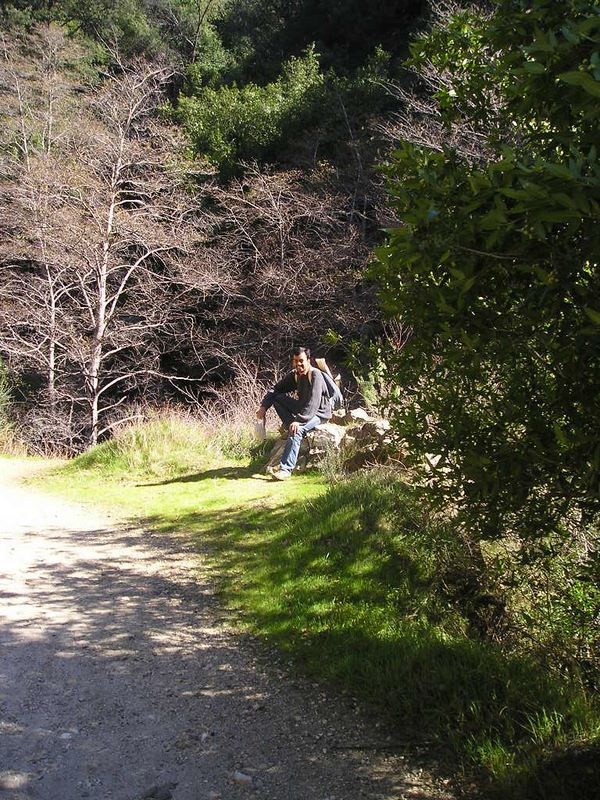

Caltech Memories -- I've always enjoyed hiking. This was taken on my first SoCal Hike to Chantry Flats/Sturtevant Falls organized by the Caltech-Y. Over the next 3 years, I went with the Y on several fun hikes in the region. (Feb-March 2004)
First |
Previous Picture |
Next Picture |
Last | Thumbnails
